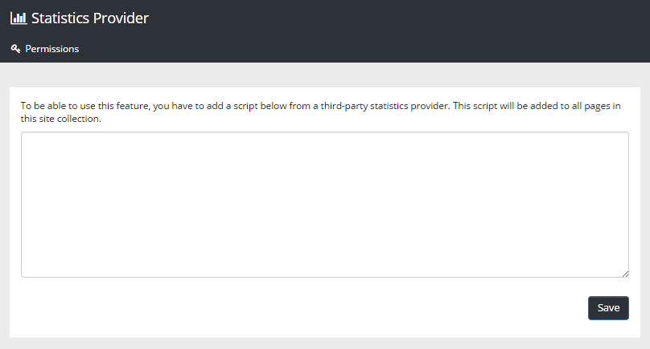

For statistics in Omnia, use this option to add the script you get from your statistics provider. Don't forget to save.
You must be global admin to be able to this. If other colleagues should be able to add scripts here, add them using the "Permissions" option.
